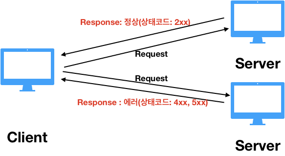

REST API 포스팅에서 HTTP 상태 코드에 대해 간략하게 정리했는데 복기하는 마음으로, 조금 더 자세히 알아봤다.
HTTP status code

HTTP 상태 코드는 클라이언트가 보낸 요청(request)이 성공적으로 완료되었는지 응답(response)을 통해 알려준다. 이러한 응답은 5개의 그룹으로 나뉘어진다. 상태 코드는 3자리 수로 나타내는데, 가장 앞자리 수가 바로 응답의 종류를 의미한다.
| 상태 | 그룹 | 역할 |
|---|---|---|
1XX |
Informational | 현재 요청까지 처리했다는 임시적인 응답 |
2XX |
Success | 클라이언트의 요청을 성공적으로 처리 |
3XX |
Redirection | 요청을 완료하기 위해 추가적인 동작 필요 |
4XX |
Client Error | 클라이언트의 요청 내용이 잘못된 경우 |
5XX |
Server Error | 서버가 요청을 처리하는 데 실패 |
1XX
100 - Continue
요청의 시작 부분 일부가 받아들여졌으며 클라이언트는 나머지 부분을 계속해서 보내야 한다.
101 - Switching Protocol
말 그대로 클라이언트가 서버에 프로토콜 전환을 요청한 것으로 서버는 승인 중인 상태를 뜻한다.
2XX
200 - Ok
클라이언트가 요청한 작업을 성공적으로 처리한 상태를 뜻한다.
201 - Created
생성 작업을 요청받아 성공적으로 처리한 경우로 POST를 통한 요청이 대표적이다.
204 - No content
요청을 정상적으로 처리했지만 response 바디를 포함하지 않는다. 클라이언트에 새로운 정보를 보낼 필요가 없는 경우 사용된다.
3XX
301 - Moved Permanently
요청한 리소스가 새로운 URI로 이동한 경우이며 response 헤더 Location 에 새로운 URI를 포함해서 전달한다. (영구적인 이동)
302 - Found
301과 동일하나 클라이언트는 향후 요청도 동일한 URI로 해야 한다. (일시적인 이동)
303 - See Other
요청한 리소스가 다른 URI에 있어 리다이렉트 장소를 GET 메소드를 통해 얻어야 한다.
304 - Not Modified
이전의 동일한 요청과 비교하여 변화 없음을 의미하여 캐시를 목적으로 사용된다.
307 - Temporary Redirect
302와 동일하나 HTTP Method 를 변경하면 안된다. 만약 첫 요청에 POST를 사용했다면 그 다음 요청에도 POST를 사용해야 한다.
4XX
400 - Bad Request
클라이언트가 보낸 요청의 구문이 잘못되었음을 의미한다.
401 - Unauthorized
요청한 리소스에 대한 엑세스 권한이 없는 경우에 사용한다.
403 - Forbidden
요청한 리소스에 대한 엑세스가 금지되었음을 의미한다. 401과 비슷하지만 403 요청에는 authorization 헤더가 없다.
404 - Not Found
인터넷에서 굉장히 자주 보는 상태 코드로 지정한 리소스를 서버에서 찾을 수 없을 때 사용한다.
5XX
500 - Internal Server Error
서버에서 요청을 처리하는 중 에러가 발생했다.
501 - Not Implemented
서버가 지원하지 않는 새로운 HTTP Method를 사용하여 요청한 경우를 의미한다.
502 - Bad Gateway
게이트웨이 혹은 프록시 역할을 하는 서버가 그 뒷단 서버로부터 잘못된 응답을 받았다.
503 - Service Unavailable
현재 서버에서 서비스를 제공할 수 없음을 의미한다. 보통 서버의 과부하나 서비스 점검과 같이 일시적인 상태이다.